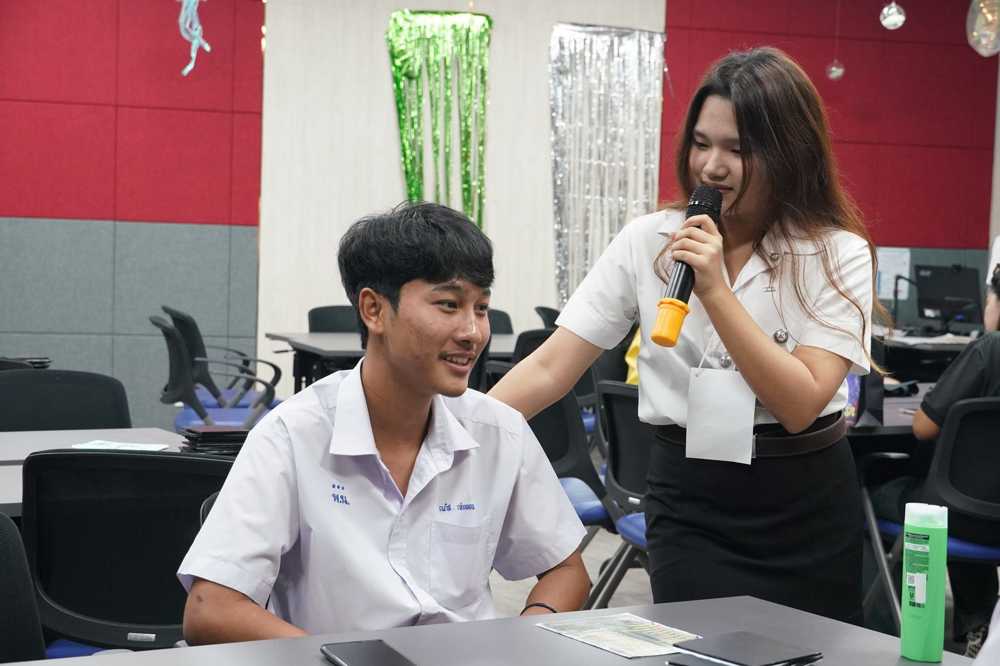

Resources
Forms & Documents
แบบฟอร์ม
แบบฟอร์ม เอกสาร และขั้นตอนการยื่นเรื่องสำหรับนิสิต คณาจารย์ และบุคลากร รวมไว้ในที่เดียว
118รายการ
6หมวดงาน
แสดง 118 รายการ
ทุกรายการเปิดในแท็บใหม่ · พบลิงก์ใช้งานไม่ได้ แจ้ง saraban_bas@g.swu.ac.th
งานบริหารและธุรการ
Administration
- BAS1-201แบบฟอร์มการขอหนังสือรับรองPDF (เปิดในแท็บใหม่)
- BAS1-212แบบฟอร์มขออนุญาตขอออกก่อนเวลาปฏิบัติงานPDF (เปิดในแท็บใหม่)
- BAS1-213แบบฟอร์มขอรายงานการลืมสแกนใบหน้า (เข้า-ออก ปฏิบัติงาน)Google Form (เปิดในแท็บใหม่)
- BAS1-215ขออนุมัติเดินทางไปปฏิบัติงานนอกสถานที่PDF (เปิดในแท็บใหม่)
- BAS1-217แบบฟอร์มรายงานการอบรมพัฒนาตนเองการเข้าร่วมประชุมวิชาการเสนอผลงานทางวิชาการ (กรณีขอใช้ทุนพัฒนาบุคลากร)Word (เปิดในแท็บใหม่)
- BAS1-301แบบฟอร์มการขอใช้บริการห้องบรรยาย/ห้องประชุม และสื่อโสตทัศนูปกรณ์PDF (เปิดในแท็บใหม่)
- ขั้นตอนการขอใช้บริการห้องบรรยาย-ห้องประชุม-และสื่อโสตทัศนูปกรณ์ภาพขั้นตอน (เปิดในแท็บใหม่)
- BAS1-302แบบฟอร์มการขอใช้บริการยืมอุปกรณ์สาธารณูปโภคPDF (เปิดในแท็บใหม่)
- BAS1-303แบบฟอร์มขออนุญาตเข้าดูและสำเนาข้อมูลภาพวิดีโอจากกล้องวงจรปิดPDF (เปิดในแท็บใหม่)
- BAS1-401แบบฟอร์มการขอใช้บริการยืมอุปกรณ์โสตทัศนูปกรณ์Google Form (เปิดในแท็บใหม่)
- ขั้นตอนการขอใช้บริการยืมอุปกรณ์โสตภาพขั้นตอน (เปิดในแท็บใหม่)
- BAS1-403แบบฟอร์มการให้บริการจอง License ZOOM สำหรับคณาจารย์และเจ้าหน้าที่ คณะบริหารธุรกิจเพื่อสังคมGoogle Form (เปิดในแท็บใหม่)
- BAS1-404แบบฟอร์มส่งข่าวประชาสัมพันธ์ คณะบริหารธุรกิจเพื่อสังคมGoogle Form (เปิดในแท็บใหม่)
- ขั้นตอนการส่งข่าวประชาสัมพันธ์ภาพขั้นตอน (เปิดในแท็บใหม่)
- BAS1-501แบบฟอร์มขออนุมัติใช้รถยนต์ส่วนกลาง และค่าใช้จ่ายในการเดินทางไปราชการเว็บไซต์ (เปิดในแท็บใหม่)
- แบบฟอร์มส่งรายละเอียดงานออกแบบGoogle Form (เปิดในแท็บใหม่)
งานบริการการศึกษา
Student Services
- BAS2-101แบบฟอร์มขอชำระค่าธรรมเนียมการศึกษาล่าช้าเกินกว่าระยะเวลาที่กำหนด(ไม่ต้องให้หัวหน้าศูนย์ฯ และรองคณบดีลงนาม เพื่อลดความซ้ำซ้อน ของการเสนอเอกสารในระบบ)PDF (เปิดในแท็บใหม่)
- BAS2-103แบบฟอร์มขอลาป่วย/ลากิจ/ลาเข้าร่วมโครงการหรือกิจกรรมPDF (เปิดในแท็บใหม่)
- BAS2-104แบบฟอร์มขอแก้ไขผลการเรียน(ไม่ต้องให้หัวหน้าศูนย์ฯ และรองคณบดีลงนาม เพื่อลดความซ้ำซ้อนของการเสนอเอกสารในระบบ)PDF (เปิดในแท็บใหม่)
- BAS2-105แบบฟอร์มขอออกหนังสือ (ขอความอนุเคราะห์ให้นิสิตเข้าสัมภาษณ์/ขอเก็บข้อมูล/เข้าศึกษาดูงาน/กิจกรรมจิตอาสา/แจกแบบสอบถาม)PDF (เปิดในแท็บใหม่)
- BAS2-201แบบฟอร์มการเข้าร่วมกิจกรรมบำเพ็ญสาธารณประโยชน์ (รายบุคคล)PDF (เปิดในแท็บใหม่)
- ขั้นตอนการเข้าร่วมกิจกรรมบำเพ็ญสาธารณประโยชน์-รายบุคคลภาพขั้นตอน (เปิดในแท็บใหม่)
- BAS2-202แบบฟอร์มรายงานผลข้อมูลนิสิตที่ได้รับรางวัล คณะบริหารธุรกิจเพื่อสังคมPDF (เปิดในแท็บใหม่)
- ขั้นตอนการรายงานผลข้อมูลนิสิตที่ได้รับรางวัลภาพขั้นตอน (เปิดในแท็บใหม่)
- BAS2-203แบบฟอร์มรายละเอียดโครงการขอทุนสนับสนุน มหาวิทยาลัยศรีนครินทรวิโรฒPDF (เปิดในแท็บใหม่)
- ขั้นตอนการขอรับทุนสนับสนุนโครงการ มหาวิทยาลัยศรีนครินทรวิโรฒภาพขั้นตอน (เปิดในแท็บใหม่)
- BAS2-204แบบฟอร์มใบสมัครขอรับทุนการศึกษา มหาวิทยาลัยศรีนครินทรวิโรฒPDF (เปิดในแท็บใหม่)
- BAS2-205แบบฟอร์มใบสมัครขอรับทุนการศึกษา คณะบริหารธุรกิจเพื่อสังคมPDF (เปิดในแท็บใหม่)
- ขั้นตอนการขอรับทุนการศึกษา คณะบริหารธุรกิจเพื่อสังคมภาพขั้นตอน (เปิดในแท็บใหม่)
- BAS2-206แบบฟอร์มหนังสือรับรองรายได้ของครอบครัวPDF (เปิดในแท็บใหม่)
- BAS2-207แบบคำขอเรียกร้องค่าสินไหมทดแทนอันเนื่องมาจากอุบัติเหตุPDF (เปิดในแท็บใหม่)
- รู้สิทธิ เรื่องประกันอุบัติเหตุภาพขั้นตอน (เปิดในแท็บใหม่)
- BAS2-208แบบฟอร์มลงทะเบียนผู้เข้าร่วมโครงการPDF (เปิดในแท็บใหม่)
- BAS2-209แบบฟอร์มลงทะเบียนขอกิจกรรมจิตอาสาPDF (เปิดในแท็บใหม่)
- BAS2-210แบบฟอร์มขอหนังสือแสดงความคิดเห็นของที่ปรึกษาPDF (เปิดในแท็บใหม่)
- BAS2-211แบบฟอร์มขอหนังสือรับรองความประพฤติPDF (เปิดในแท็บใหม่)
- BAS2-212แบบฟอร์มการขอยืมกลอง/กล่องพยาบาล/สมุดคำกล่าวรายงาน/พานพร้อมผ้ารองเว็บไซต์ (เปิดในแท็บใหม่)
- STD-01ประกาศมหาวิทยาลัยศรีนครินทรวิโรฒ เรื่องปฏิทินการศึกษา ระดับปริญญาตรีเว็บไซต์ (เปิดในแท็บใหม่)
- STD-02อัตราค่าธรรมเนียมการศึกษา และประกาศเกี่ยวกับค่าธรรมเนียมอื่น ๆเว็บไซต์ (เปิดในแท็บใหม่)
- STD-03คำแนะนำการลงทะเบียนเรียน ระดับปริญญาตรีการชำระค่าธรรมเนียมการศึกษาคำแนะนำการใช้ระบบ Supreme2019เว็บไซต์ (เปิดในแท็บใหม่)
- STD-04รูปแบบบัตรประจำตัวนิสิต (Virtual Card) และการติดตั้ง SWU Mobile Appเว็บไซต์ (เปิดในแท็บใหม่)
- STD-05หนังสือรับรองคุณสมบัติของผู้สมัครเข้าศึกษาคณะบริหารธุรกิจเพื่อสังคม มหาวิทยาลัยศรีนครินทรวิโรฒเว็บไซต์ (เปิดในแท็บใหม่)
- STD-06การขอใบรับรองการศึกษา/E-Transcriptเว็บไซต์ (เปิดในแท็บใหม่)
- STD-07คู่มือการแจ้งจบการศึกษา และคำแนะนำการแจ้งจบการศึกษาเว็บไซต์ (เปิดในแท็บใหม่)
- STD-08หนังสือขอลาฝึกซ้อมย่อยงานพิธีพระราชทานปริญญาบัตรPDF (เปิดในแท็บใหม่)
- STD-09การยื่นคำร้องออนไลน์ในระบบ Supreme2019เว็บไซต์ (เปิดในแท็บใหม่)
- คำสั่งแต่งตั้งกรรมการคุมสอบปลายภาค ภาคเรียนที่ 2/2567PDF (เปิดในแท็บใหม่)
- ประกาศคณะบริหารธุรกิจเพื่อสังคม เรื่อง แนวปฏิบัติและหลักเกณฑ์การรับโอนย้ายสาขาวิชาหรือวิชาเอก นิสิตระดับปริญญาตรี มหาวิทยาลัยศรีนครินทรวิโรฒPDF (เปิดในแท็บใหม่)
งานวิจัย
Research
- BAS2-301แบบฟอร์ม (ว1ด) เพื่อขอรับทุนสนับสนุนการวิจัยงบประมาณเงินรายได้คณะบริหารธุรกิจเพื่อสังคม 2568Word (เปิดในแท็บใหม่)
- BAS2-302แบบฟอร์มขอรับทุนพัฒนาบุคลากร(ให้แนบประกาศคณะบริหารธุรกิจเพื่อสังคม ว่าด้วย การเบิกจ่ายงบพัฒนาบุคลากรฯ ทุกครั้ง)Word (เปิดในแท็บใหม่)
- BAS2-304แบบฟอร์มขออนุมัติใช้เงินค่าสมัคร ค่าตีพิมพ์ ค่าแปลภาษา(แนบรายงานการประชุมทุกครั้ง)Word (เปิดในแท็บใหม่)
- BAS2-305แบบฟอร์มขออนุมัติเบิกเงินค่าสมัคร ค่าตีพิมพ์ ค่าแปลภาษา(ใช้หลังจากได้รับการอนุมัติการใช้เงินเรียบร้อยแล้ว)Word (เปิดในแท็บใหม่)
- BAS2-306แบบสรุปผลงานวิชาการคณะบริหารธุรกิจเพื่อสังคมGoogle Form (เปิดในแท็บใหม่)
- SWURI-R-02แบบฟอร์มการดำเนินงานโครงการวิจัยที่ได้รับทุนWord (เปิดในแท็บใหม่)
- SWURI-I-24แบบฟอร์มขอทุนสนับสนุนรางวัลการตีพิมพ์ผลงานวิจัยในวารสารวิชาการระดับนานาชาติ (สถาบันยุทธศาสตร์ทางปัญญาและวิจัย)Word (เปิดในแท็บใหม่)
- SWURI-I-25แบบฟอร์มการพิจารณาทุนสนับสนุนการตีพิมพ์ผลงานวิจัยในวารสารวิชาการระดับนานาชาติWord (เปิดในแท็บใหม่)
- SWURI-R-22รายละเอียดงบประมาณการวิจัยExcel (เปิดในแท็บใหม่)
- SWURI-R-03แบบรายงานความก้าวหน้า(แนบพร้อมการขยายเวลา)Word (เปิดในแท็บใหม่)
- SWURI-R-04บทสรุปผลงานวิจัย-เผยแพร่สังคม(สำหรับแนบปิดโครงการวิจัย)Word (เปิดในแท็บใหม่)
แบบฟอร์มอื่น ๆ ของสถาบันยุทธศาสตร์ทางปัญญาและวิจัย
งานคลังและพัสดุ
Finance & Procurement
- แบบฟอร์มการสั่งซื้อวัสดุ/อุปกรณ์สำนักงานPDF (เปิดในแท็บใหม่)
- ขั้นตอนการสั่งซื้อวัสดุสำนักงานรายเดือนภาพขั้นตอน (เปิดในแท็บใหม่)
- แบบฟอร์มใบส่งคืนครุภัณฑ์ (V.20241007)PDF (เปิดในแท็บใหม่)
- ขั้นตอนการส่งคืนครุภัณฑ์ภาพขั้นตอน (เปิดในแท็บใหม่)
- หลักเกณฑ์การจ่ายและวิธีการจ่ายเงินรายได้ พ.ศ. 2566PDF (เปิดในแท็บใหม่)
- แบบฟอร์มใบเบิกเงินสวัสดิการเกี่ยวกับการรักษาพยาบาล (แบบ 7131)PDF (เปิดในแท็บใหม่)
- ขั้นตอนการเบิกค่าสวัสดิการข้าราชการเปลี่ยนสภาพภาพขั้นตอน (เปิดในแท็บใหม่)
- แบบฟอร์มสัญญาการยืมเงินของมหาวิทยาลัย (แบบพิมพ์) (เริ่มใช้วันที่ 1 ต.ค. 2562)PDF (เปิดในแท็บใหม่)
- ขั้นตอนในการรับเงินสัญญายืมเงินจากคณะฯภาพขั้นตอน (เปิดในแท็บใหม่)
- แบบฟอร์มใบรับรองแทนใบเสร็จ ( แบบ บก111 )PDF (เปิดในแท็บใหม่)
- แบบฟอร์มใบเบิกเงินสวัสดิการเกี่ยวกับการศึกษาของบุตร (แบบ 7223)PDF (เปิดในแท็บใหม่)
- ขั้นตอนใบเบิกเงินสวัสดิการเกี่ยวกับการศึกษาของบุตร (แบบ 7223)ภาพขั้นตอน (เปิดในแท็บใหม่)
- แบบฟอร์มใบเบิกเงินสวัสดิการพนักงานมหาวิทยาลัยศรีนครินทรวิโรฒเว็บไซต์ (เปิดในแท็บใหม่)
- ขั้นตอนใบเบิกเงินสวัสดิการพนักงานมหาวิทยาลัยศรีนครินทรวิโรฒภาพขั้นตอน (เปิดในแท็บใหม่)
- แบบฟอร์มค่าใช้จ่ายในการเดินทาง ส่วนที่ 1PDF (เปิดในแท็บใหม่)
- แบบฟอร์มค่าใช้จ่ายในการเดินทาง ส่วนที่ 2PDF (เปิดในแท็บใหม่)
- แนวปฏิบัติการใช้ทุนพัฒนาบุคลากร-กรณีเดินทางไปปฏิบัติงานในต่างประเทศPDF (เปิดในแท็บใหม่)
- แบบฟอร์มบันทึกยืมเงินทดรองจ่ายPDF (เปิดในแท็บใหม่)
- แบบฟอร์มขออนุมัติโครงการ/ขออนุมัติงบประมาณ/ขออนุมัติบุคคลปฏิบัติงานและเข้าร่วมโครงการPDF (เปิดในแท็บใหม่)
- ขั้นตอนขออนุมัติงบประมาณโครงการPDF (เปิดในแท็บใหม่)
- แบบฟอร์มขออนุมัติค่าใช้จ่ายในการเดินทางไปนิเทศนิสิตฝึกงานPDF (เปิดในแท็บใหม่)
- แบบฟอร์มขออนุมัติจัดประชุมPDF (เปิดในแท็บใหม่)
- แบบฟอร์มขออนุมัติเชิญบุคคลภายนอกเป็นอาจารย์พิเศษและขออนุมัติเงินค่าตอบแทนอาจารย์พิเศษPDF (เปิดในแท็บใหม่)
- แบบฟอร์มขออนุมัติเชิญอาจารย์นอกสังกัดมาบรรยายและขออนุมัติเงินค่าสอนเว็บไซต์ (เปิดในแท็บใหม่)
- แบบฟอร์มใบรับรองแทนใบเสร็จรับเงิน (ค่า TAXI)PDF (เปิดในแท็บใหม่)
- แบบฟอร์มใบสำคัญรับเงิน (วิทยากร)PDF (เปิดในแท็บใหม่)
- แบบฟอร์มใบสำคัญรับเงินPDF (เปิดในแท็บใหม่)
- แบบฟอร์มบันทึกขอให้ดำเนินการจัดซื้อ/จัดจ้างPDF (เปิดในแท็บใหม่)
- ขั้นตอนการส่งเอกสารจัดซื้อ-จัดจ้างในโครงการภาพขั้นตอน (เปิดในแท็บใหม่)
- ขั้นตอนการเบิกค่าสวัสดิการข้าราชการเปลี่ยนสภาพภาพขั้นตอน (เปิดในแท็บใหม่)
- ขั้นตอนการขอรับทุน-ค่าสมัครตีพิมพ์-ค่าตีพิมพ์-ค่าแปลภาษาภาพขั้นตอน (เปิดในแท็บใหม่)
- ขั้นตอนการขอรับทุนพัฒนาบุคลากรภาพขั้นตอน (เปิดในแท็บใหม่)
- ขั้นตอนการทำสัญญาวิจัยเงินรายได้คณะภาพขั้นตอน (เปิดในแท็บใหม่)
- ประกาศ-การเบิกจ่ายงบพัฒนาบุคลากรระยะสั้นจากงบประมาณเงินรายได้-2569PDF (เปิดในแท็บใหม่)
- ประกาศ-การรับทุนสนับสนุนการวิจัยงบประมาณเงินรายได้คณะPDF (เปิดในแท็บใหม่)
- รายงานการประชุม-พิจารณาอนุมัติหลักเกณฑ์การจ่ายPDF (เปิดในแท็บใหม่)
แบบฟอร์มเบิกค่าสอนเกินภาระงาน
- แบบบันทึกภาระงานทางวิชาการExcel (เปิดในแท็บใหม่)
- ขออนุมัติเบิกเงินค่าสอนเกินภาระงานและค่าสอนโครงการพิเศษWord (เปิดในแท็บใหม่)
- หลักฐานการเบิกจ่ายเงินค่าสอนพิเศษและค่าสอนเกินภาระงานสอนในสถาบันอุดมศึกษาExcel (เปิดในแท็บใหม่)
- ขออนุมัติการเบิกจ่ายค่าสอนเกินเกณฑ์ภาระงานWord (เปิดในแท็บใหม่)
- แบบใบเบิกค่าสอนเกินเกณฑ์ภาระงานExcel (เปิดในแท็บใหม่)
- หน้างบใบสำคัญค่าสอนพิเศษประกอบฎีกาWord (เปิดในแท็บใหม่)
งานนโยบายและแผน
Policy & Planning
- แบบฟอร์มขออนุมัติโครงการ ประจำปีงบประมาณ พ.ศ.2570Word (เปิดในแท็บใหม่)
- แบบฟอร์มรายงานผลโครงการ ประจำปีงบประมาณ พ.ศ.2570Word (เปิดในแท็บใหม่)
- แบบฟอร์มทุนภายในเว็บไซต์ (เปิดในแท็บใหม่)
- แบบฟอร์มทุนภายนอกเว็บไซต์ (เปิดในแท็บใหม่)
- ทุนสนับสนุนเว็บไซต์ (เปิดในแท็บใหม่)
- แบบฟอร์มการยื่นขอจดทรัพย์สินทางปัญญาเว็บไซต์ (เปิดในแท็บใหม่)
ระดับบัณฑิตศึกษา
Graduate Studies
- Checklist ก่อนส่งบว 430 (ยื่นสอบ 5 บท)PDF (เปิดในแท็บใหม่)
- BAS6-101ข้อเสนอแนะที่นิสิตจะต้องแก้ไขหลังสอบเค้าโครง/ปากเปล่าPDF (เปิดในแท็บใหม่)
- ขั้นตอนการลงทะเบียนสอบปริญญานิพนธ์/สารนิพนธ์PDF (เปิดในแท็บใหม่)
- แนวทางการรับ-ส่งเอกสารแบบบว.ต่างๆ (ช่องทางออนไลน์)PDF (เปิดในแท็บใหม่)
- แบบรายงานผลการพิจารณาเค้าโครงการค้นคว้าอิสระPDF (เปิดในแท็บใหม่)
ไม่พบแบบฟอร์มที่ตรงกับคำค้น ลองใช้คำที่สั้นลง หรือเลือก “ทั้งหมด”